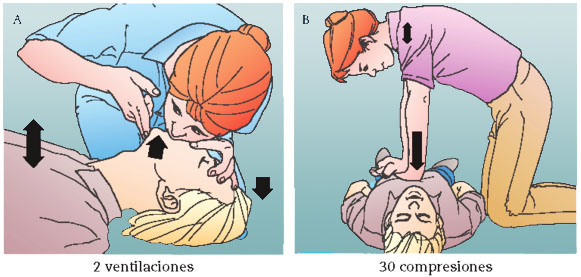

Reanimación cardiopulmonar (RCP)
Antes de continuar vea la nota sobre el uso de esta Guía.
Generalidades:
La reanimación cardiopulmonar o cardiorespiratoria se aplica en caso de paro cardiorespiratorio, es decir cuando la persona no respira ni tiene pulso. Esta maniobra sustituye la función de los pulmones y el corazón permitiendo que cierta cantidad de oxígeno siga llegando a todo el cuerpo, particulamente al cerebro, que comienza a sufrir daños irreversibles después de unos pocos minutos sin oxígeno.
Procedimiento:

Consideraciones:
La RCP puede ser aplicada por dos personas A y B. la persona A insulfando en los pulmones. La persona B haciendo las compresiones sobre el pecho. Después de 4 ciclos cambiar posiciones y continuar hasta que la persona se reanime o lleguen los servicios de emergencia.
La RCP deberá evitarse o suspenderse sólo cuando:
- Exista una instrucción legal de no aplicar RCP en la víctima.
- El cuerpo presente signos de muerte irreversible como rigor mortis, decapitación o livideces en sitios de declive.
La RCP no garantiza que se pueda salvar la vida de la persona, pero en caso que así sea reduce los posibles daños por la falta de oxigenación.
Causas:
Las principales causas de un paro cardiorespiratorio pueden ser:
- Asfixia
entre otras.